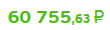
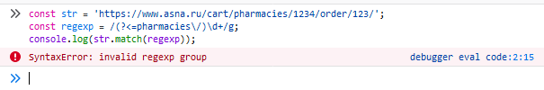

Stas Raranetskyi
Stas Raranetskyi
Регулярное выражение можно создать двумя способами:
const regexp = /шаблон/флаги;
RegExp:const regexp = new RegExp('шаблон','флаги');
search - ищет на совпадение в строке. Возвращет индекс совпадения, или -1 если совпадений не будет найдено.
replace - выполняет поиск совпадения в строке, и заменяет совпавшую подстроку другой подстрокой переданной как аргумент в этот метод.
split - использует регулярное выражение или фиксированую строку чтобы разбить строку на массив подстрок.
test - ищет совпадение в строке. Возвращет true/false.
match - выполняет поиск совпадения в строке. Возвращет массив данных либо null если совпадения отсутствуют.
exec - выполняет поиск совпадения в строке. Возвращает массив данных. Можно задать стартовую позицию поиска.
const str = 'Я люблю JavaScript!';
const regexp = /лю/;
alert(str.search(regexp)); // 2
Аналогично
const str = 'Я люблю JavaScript!';
const substr = 'лю';
alert(str.indexOf(regexp)); // 2
i - регистронезависимый поиск, то есть не различает между А и а.
g - глобальный поиск, то есть будет искать все совпадения.
m - многострочный поиск. Говорит сам за себя.)
\d - цифра, символ от 0 до 9.
\w - буква латинского алфавита или цифра или подчёркивание '_'.
\s - пробельный символ, включая табы, переводы строки и т.п.
\b - обозначает не символ, а границу между символами.
Граница имеет "нулевую ширину"
\D - не цифра, то есть любой символ кроме \d, например буква.
\W - любой символ, кроме \w, то есть не латинница, не подчёркивание, не цифра. В частности, русские буквы принадлежат этому классу.
\S - не пробел, то есть любой символ кроме \s, например буква.
\B - проверка, обратная \b
В регулярных выражениях пробел – такой же символ, как и другие. Если регэксп не учитывает пробелов, то он не сработает.
Квантификаторы - это количество повторений символа или группы символов
{n} - точное количество n. alert('1 23 456'.match(/\d{2}/)); // '23'
{n, m} - количество от n до m. alert('1 23 456'.match(/\d{2,3}/g)); // '23','456'
{n,} - количество n и более. alert('1 23 456 7890'.match(/\d{3,}/g)); // '456','7890'
+ - один или более, то же самое что {1, }.alert('1 10 100'.match(/\d0+/g)); // '10','100'
* - 0 или более, то же самое что {0, }. alert('1 10 100'.match(/\d0*/g)); // '1', '10','100'
? - 0 или 1, то же самое что {0, 1}. alert('color или colour'.match(/colou?r/g)); // 'color', 'colour'
Как и граница слова имеют "нулевую ширину", то есть являются проверкой.
При включенном многострочном режиме якоря означают не только начало/конец текста, но и начало/конец строки.
Обнозначается символом ^
const str = '100500 правок по задаче лучше чем 500100';
console.log(str.match(/^\d+/g)); // ['100500']
Обнозначается символом $
const str = '100500 правок по задаче лучше чем 500100';
console.log(str.match(/\d+$/g)); // ['500100']
Если в регулярном выражении несколько символов или символьных классов заключены в квадратные скобки […], то это
означает "искать любой символ из указанных в […]".
Например, [abc] означает любой символ из этих трёх: 'a', 'b', или 'c'.
const str = 'font-size: 24; font-size: 34;';
console.log(str.match(/[23]\d/g)); // ['24', '34']
Квадратные скобки могут также содержать диапазоны символов.
Например, [a-z] – произвольный символ от a до z, [0-9] – цифра от 0 до 9.
const str = '100500 правок по задаче лучше чем 500100';
console.log(str.match(/[0-9]+/g)); // ['100500', '500100']
Кроме обычных, существуют также исключающие диапазоны: [^…].
Квадратные скобки, начинающиеся со знака каретки: [^…] находят любой символ, кроме указанных.
const str = '+38 (099) 123-45-67';
console.log(str.replace(/[^0-9]+/g, '')); // 380991234567
Часть шаблона может быть заключена в скобки (...). Такие выделенные части шаблона называют «скобочными выражениями» или
«скобочными группами».
У такого выделения есть два эффекта:
const str = 'Gogogo now!';
console.log(str.match(/(go)+/i)); // ['Gogogo', 'go']
Если не надо включать содержимое группы в результат её можно исключть с помощью ?: или задействовать флаг g
const str = 'Gogogo now!';
console.log(str.match(/(?:go)+/i)); // ['Gogogo']
console.log(str.match(/(go)+/ig)); // ['Gogogo']
Скобочные группы можно не только получать в результате.
Движок регулярных выражений запоминает их содержимое, и затем его можно использовать как в самом паттерне, так и в
строке замены.
const name = 'Stas Raranetskyi';
const regexp = /([a-z]+) ([a-z]+)/gi;
console.log(name.replace(regexp, '$2 $1')); // 'Raranetskyi Stas'
Пример использования скобочной группы в шаблоне:
const str = '<h1>Hello, world!</h1>';
const regexp = /<([a-z0-9]+)>.*<\/\1>/gi;
console.log(str.match(regexp)); // ['<h1>Hello, world!</h1>']
Альтернация – термин в регулярных выражениях, которому в русском языке соответствует слово «ИЛИ». Она обозначается символом вертикальной черты | и позволяет выбирать между вариантами.
const str = 'html, css, js - основа всей веб-разработки';
const regexp = /html|css|js/gi;
console.log(str.match(regexp)); // ['html', 'css', 'js']
(?=pattern)
const str = 'ЛюдовикXV, КарлXVI, ФридрихXVIII, ЕкатеринаLXVII';
const regexp = /[а-яё]+(?=LX)/gi;
console.log(str.match(regexp)); // ['Екатерина']
(?!pattern)
const str = 'ЛюдовикXV, КарлXVI, ФридрихXVIII, ЕкатеринаLXVII';
const regexp = /[а-яё]+(?!LX)\b/gi;
console.log(str.match(regexp)); // ['Людовик', 'Карл', 'Фридрих']
(?<=pattern)
const str = '$110, 150, $200, 300, $350, 400';
const regexp = /(?<=\$)\d+/gi;
console.log(str.match(regexp)); // ['110', '200', '350']
(?<!pattern)
const str = '$110, 150, $200, 300, $350, 400';
const regexp = /\b(?<!\$)\d+\b/gi;
console.log(str.match(regexp)); // ['150', '300', '400']
Получить число из разметки 
const str = '<span>60 755<span>,63 руб';
const regexp = /[^0-9,-]+/ig;
const newStr = str.replace(regexp, '');
const number = Number(newStr.replace(',','.'))
console.log(number); // 60755.63
Найти HTML-комментарии в тексте
const str = '.. <!-- Тестовый комментарий --> .. <!----> .. ';
const regexp = /<!--[\s\S]*?-->/g;
console.log(str.match(regexp)); // '<!-- Тестовый комментарий -->', '<!---->'
Найти названия html или htm файлов.
const str = 'https://www.my-site.ru/category/subcategory/index_1.html';
const regexp = /[\w-]+\.html?$/g;
console.log(str.match(regexp)); // ['index_1.html']
Найти id аптеки в адресной строке
const str = 'https://www.asna.ru/cart/pharmacies/1234/order/123/';
const regexp = /(?<=pharmacies\/)\d+/g;
console.log(str.match(regexp)); // ['1234']
В Firefox не арбайнет!
Найти id аптеки в адресной строке
const str = 'https://www.asna.ru/cart/pharmacies/1234/order/123/';
const regexp = /pharmacies\/(\d+)/g;
const match = str.match(regexp);
console.log(match); // ['pharmacies/1234']
const res = match ? Number(match[0].replace(/[^0-9]/g, '')) : -1
console.log(res); // 1234